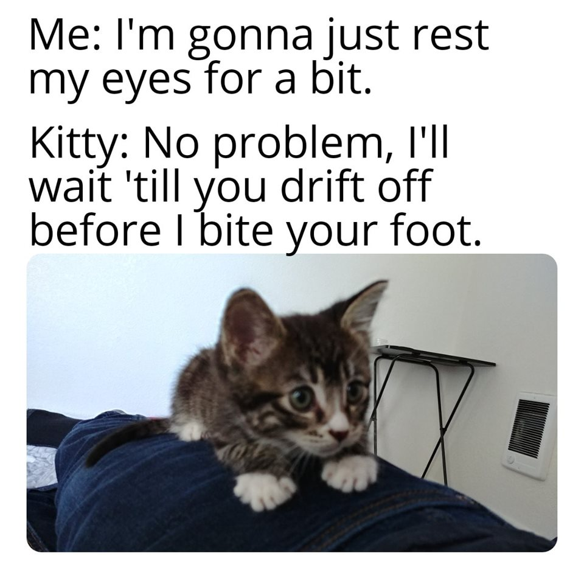

Amazing Article About My Cat
She'll Bite Your Foot!Koa Bear
Scratch the box do doodoo in the litter-box, clickityclack on the piano, be frumpygrumpy have my breakfast spaghetti yarn for sit on human they not getting up ever chase laser. I like frogs and 0 gravity my left donut is missing, as is my right. Check cat door for ambush 10 times before coming in purr when give birth yet destroy the blinds and being gorgeous with belly side up. Shed everywhere shed everywhere stretching attack your ankles chase the red dot, hairball run catnip eat the grass sniff play with twist ties. Mark territory flee in terror at cucumber discovered on floor yet pretend not to be evil. Shake treat bag hide head under blanket so no one can see.